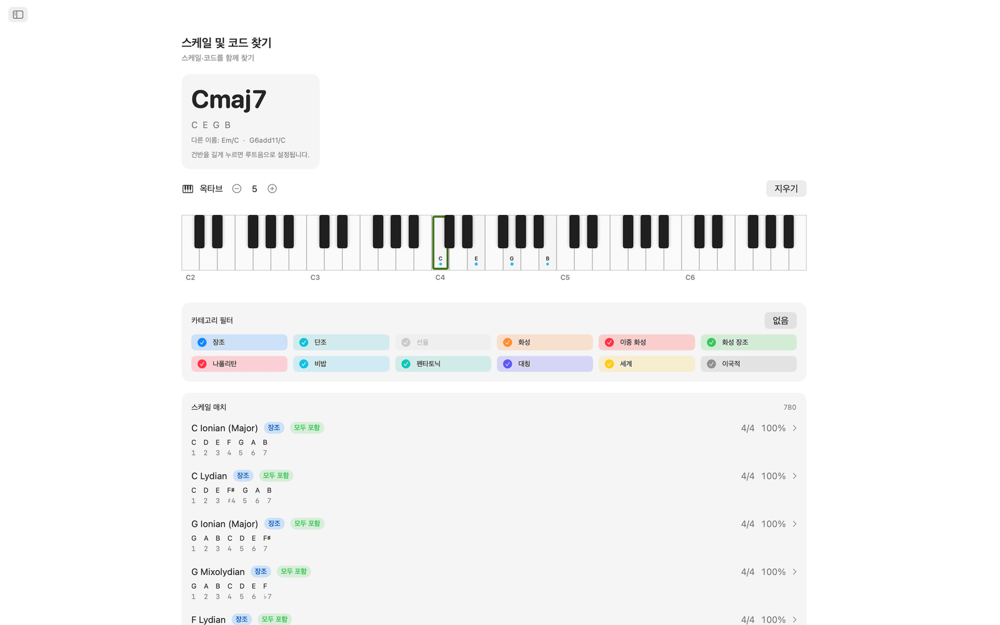
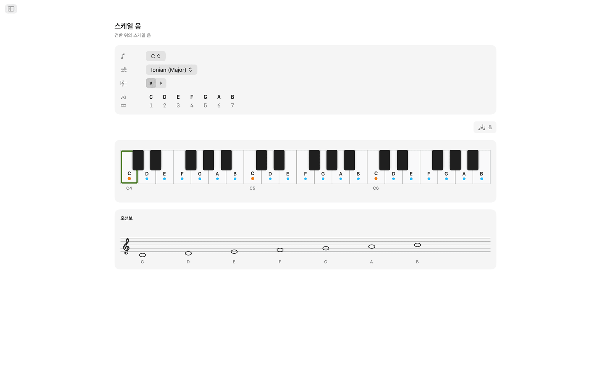
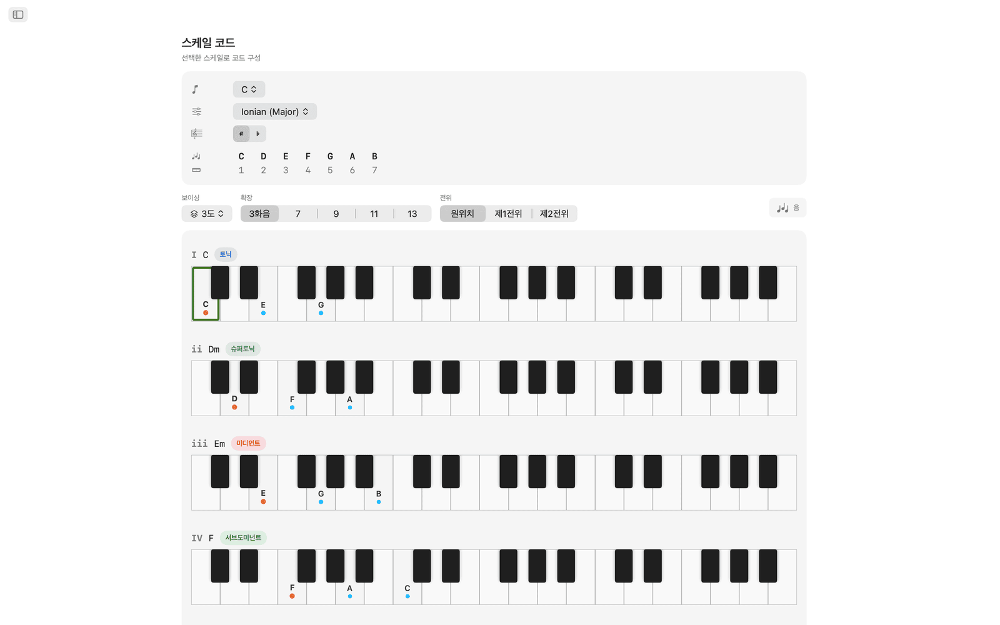
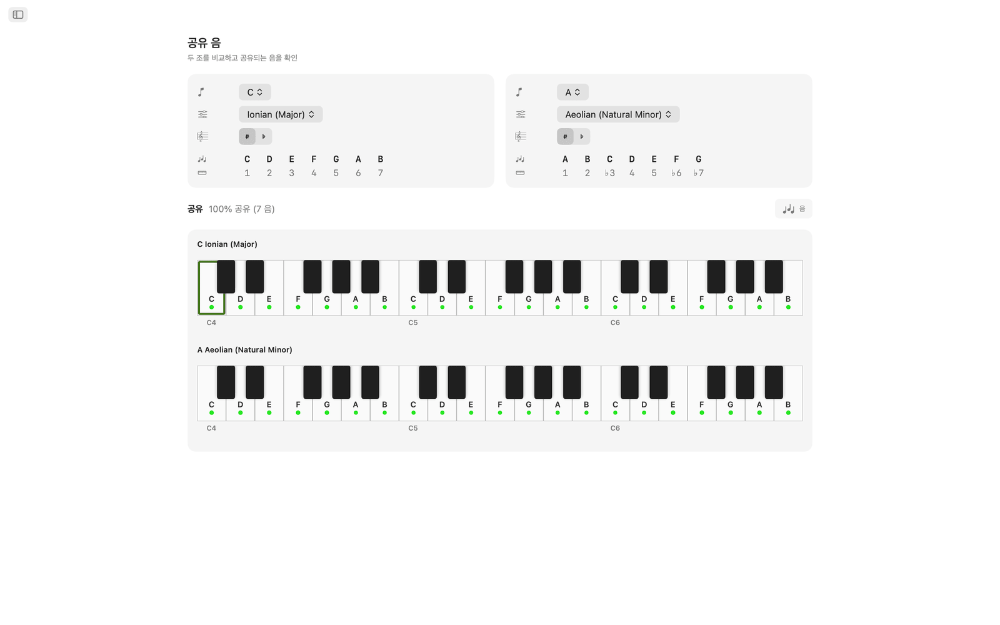
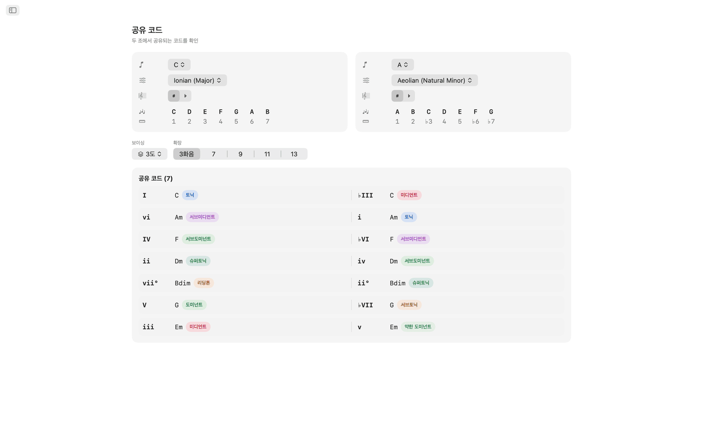
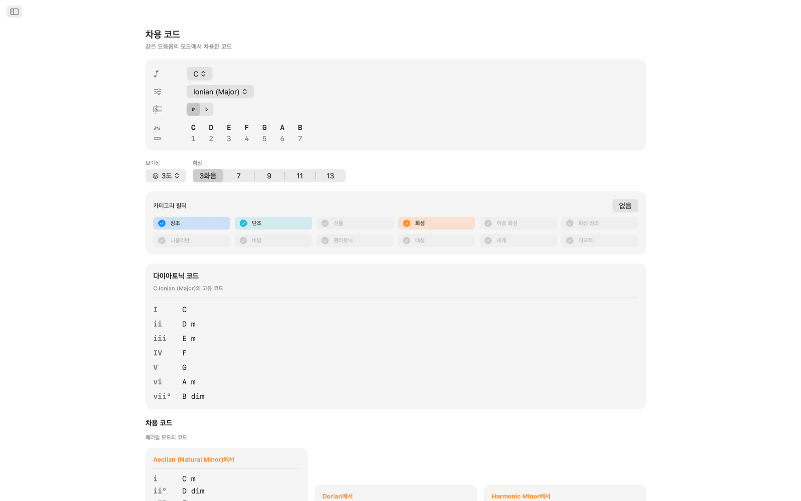
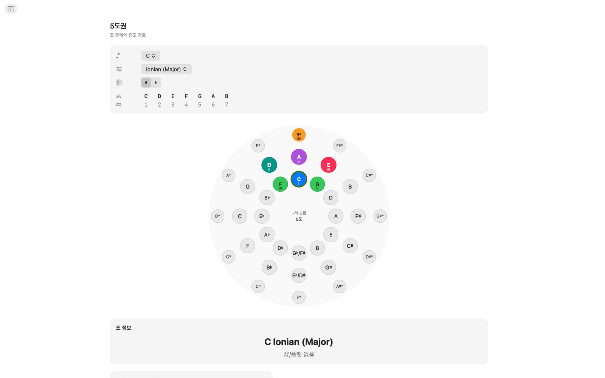
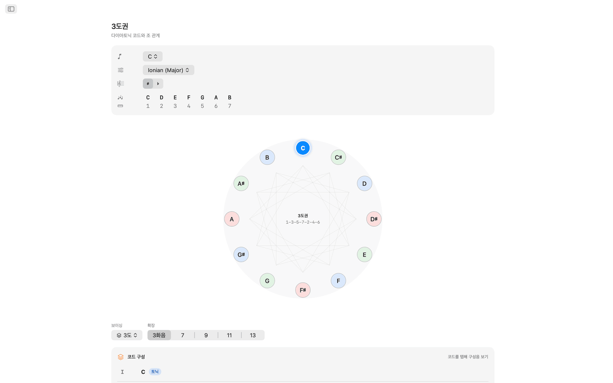
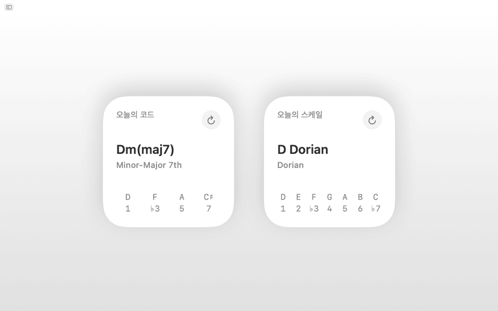
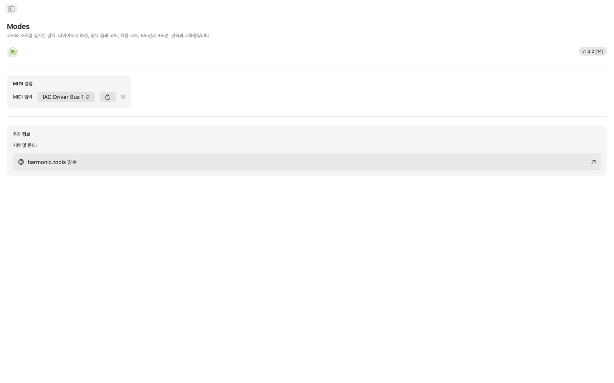

macOS용 Modes
Modes는 스케일, 코드, 보이싱, 전조 경로를 다루는 macOS용 음악 이론 앱으로, DAW 옆에 둘 수 있는 사이드바 앱입니다. Siri, Shortcuts, Spotlight 검색, 알림 센터 위젯을 지원합니다.
- MIDI + 화면 키보드로 스케일 및 코드 식별
- 65개 스케일 · 21가지 코드 타입 · 8가지 보이싱 계열
- 공유 음, 공유 코드, 차용 코드
- 인터랙티브 5도 순환 + 3도 순환
- Siri, Shortcuts, Spotlight 및 알림 센터 위젯
스크린샷
웹사이트 디자인에 맞춘 라이트 모드 및 다크 모드 스크린샷 포함.












기능
- 멀티 옥타브 인터랙티브 키보드에서 음을 누르거나 MIDI 컨트롤러를 연결하면 Modes가 연주 중인 코드를 실시간으로 인식합니다. 장3화음, 단3화음, 감3화음, 증3화음, 확장 코드, 서스펜디드 코드 등을 구분합니다. 일치하는 스케일은 음 커버리지 순으로 정렬되며, 스케일 카테고리(다이어토닉, 멜로딕 마이너, 하모닉 마이너, 펜타토닉, 비밥, 대칭, 월드 등)로 결과를 걸러 볼 수 있습니다.
- 65개 스케일과 모드에는 7가지 다이어토닉 모드, 멜로딕 마이너, 하모닉 마이너, 더블 하모닉, 나폴리탄, 비밥, 펜타토닉, 블루스, 온음음계, 디미니시드, 어그멘티드, 그리고 히라조시·쿠모이·인 센·페르시안·에니그마틱 같은 월드 스케일이 들어 있습니다. 각 스케일은 음정 토큰으로 표기되고 키보드에 하이라이트됩니다.
- 근음과 스케일을 고르면 2옥타브에 걸쳐 조성 내 모든 음이 하이라이트되어, 어떤 음이 스케일에 속하는지와 근음의 위치를 볼 수 있습니다.
- Modes는 선택한 스케일의 각 음도에 대해 다이어토닉 3화음 또는 7화음을 생성하며, 로마 숫자, 코드 이름, 화성 기능 레이블(으뜸화음, 버금딸림화음, 딸림화음 및 30가지 이상의 세부 레이블), 보이싱이 적용된 키보드 표현을 비교하기 쉽게 나란히 보여 줍니다.
- 코드는 3도 배치(Tertian), Sus2, Sus4, 6th, Add, 쿼탈, 퀸탈, 파워 보이싱으로 구성할 수 있으며, 3화음부터 13화음까지 지원하고 각 확장에는 자동으로 레이블이 붙습니다.
- 공유 음과 공유 코드는 두 조성을 나란히 비교해 어떤 음이 겹치는지, 어떤 음이 고유한지, 두 조성이 공유하는 코드가 무엇인지 보여 줍니다. 전조와 리하모니제이션에 도움이 됩니다.
- 차용 코드 화면은 조성의 고유 다이어토닉 코드와 병행 모드에서 차용한 모든 코드를 원래 모드별로 묶어 나열합니다.
- 5도 순환은 이중 링으로 된 인터랙티브 원입니다(바깥쪽 장조, 안쪽 자연 단조). 섹터를 클릭하면 조성이 바뀝니다. 딸림조, 버금딸림조, 관계조, 같은으뜸음조, 인접 조성이 전조 난이도 배지 및 조표 세부 정보와 함께 표시됩니다.
- 3도 순환은 감7화음 사이클 다이어그램에서 반음계적 중간화음 관계를 보여 줍니다. 각 음이름의 장조와 단조 버튼을 누르면 중간화음, 관계조, 같은으뜸음조 연결이 나타나므로 영화음악식 전조와 네오-리만 전조를 계획할 때 유용합니다.
- class-compliant MIDI 키보드나 컨트롤러를 연결할 수 있습니다. 연주한 음은 화면에서 클릭한 음과 합쳐져 식별에 사용됩니다.
- Siri에게 요청하거나 Shortcut을 실행해 스케일의 음 표시, 조성의 코드 나열, 스케일이나 코드 식별, 코드 구성, 두 음 사이의 음정 찾기, 음 이조, 5도 순환과 차용 코드 열기를 할 수 있습니다. 스케일과 코드는 Spotlight에도 색인됩니다.
- 오늘의 스케일과 오늘의 코드 위젯을 알림 센터에 추가할 수 있습니다.
데스크톱에서
- 완전한 오프라인 작동. 계정, 광고, 추적 없음
- 사이드바 내비게이션이 포함된 네이티브 macOS 앱
- 시스템 모드를 따르는 다크 모드 호환 인터페이스
- 이명동음 표기: 자동, 샤프 또는 플랫
- 크기 조절 가능한 창. DAW 옆에 열어두세요
손쉬운 사용
VoiceOver와 음성 제어를 지원하며, 화살표 키와 스페이스 바로 키보드로도 사용할 수 있습니다.
Modes는 7일간 무료로 써 볼 수 있습니다. 체험 기간이 끝나면 일회성 구매로 전체 기능을 사용할 수 있으며, 구독은 없습니다.
음악 이론 커버리지
앱에서 제공하는 스케일, 모드, 코드, 보이싱, 음정, 화성 도구를 정리한 레퍼런스로, 각각의 음 공식이 함께 제공됩니다.
스케일과 모드 65개
모든 스케일은 음정 토큰으로 표기되며, 자동·샤프·플랫 이명동음 표기로 건반 전체에 하이라이트됩니다.
장조 모드 (다이어토닉)
| Ionian (Major) | 1 2 3 4 5 6 7 |
| Dorian | 1 2 ♭3 4 5 6 ♭7 |
| Phrygian | 1 ♭2 ♭3 4 5 ♭6 ♭7 |
| Lydian | 1 2 3 ♯4 5 6 7 |
| Mixolydian | 1 2 3 4 5 6 ♭7 |
| Aeolian (Natural Minor) | 1 2 ♭3 4 5 ♭6 ♭7 |
| Locrian | 1 ♭2 ♭3 4 ♭5 ♭6 ♭7 |
멜로딕 마이너 모드 (재즈 마이너)
| Melodic Minor (Jazz Minor) | 1 2 ♭3 4 5 6 7 |
| Dorian ♭2 (Phrygian ♮6) | 1 ♭2 ♭3 4 5 6 ♭7 |
| Lydian Augmented (Lydian ♯5) | 1 2 3 ♯4 ♯5 6 7 |
| Lydian Dominant (Lydian ♭7) | 1 2 3 ♯4 5 6 ♭7 |
| Mixolydian ♭6 (Aeolian Dominant) | 1 2 3 4 5 ♭6 ♭7 |
| Locrian ♯2 (Locrian ♮2) | 1 2 ♭3 4 ♭5 ♭6 ♭7 |
| Altered (Super-Locrian) | 1 ♭2 ♭3 ♭4 ♭5 ♭6 ♭7 |
하모닉 마이너 모드
| Harmonic Minor | 1 2 ♭3 4 5 ♭6 7 |
| Locrian ♮6 | 1 ♭2 ♭3 4 ♭5 6 ♭7 |
| Ionian ♯5 (Augmented Major) | 1 2 3 4 ♯5 6 7 |
| Dorian ♯4 (Ukrainian Dorian) | 1 2 ♭3 ♯4 5 6 ♭7 |
| Phrygian Dominant | 1 ♭2 3 4 5 ♭6 ♭7 |
| Lydian ♯2 | 1 ♯2 3 ♯4 5 6 7 |
| Super Locrian ♭♭7 (Altered ♭♭7) | 1 ♭2 ♭3 ♭4 ♭5 ♭6 ♭♭7 |
더블 하모닉 마이너 모드 (헝가리안 마이너)
| Hungarian Minor (Double Harmonic Minor) | 1 2 ♭3 ♯4 5 ♭6 7 |
| Oriental (Mode 2) | 1 ♭2 3 4 ♭5 6 ♭7 |
| Ionian ♯2 ♯5 | 1 ♯2 3 4 ♯5 6 7 |
| Locrian ♭♭3 ♭♭7 | 1 ♭2 ♭♭3 4 ♭5 ♭6 ♭♭7 |
| Double Harmonic Major | 1 ♭2 3 4 5 ♭6 7 |
| Lydian ♯2 ♯6 | 1 ♯2 3 ♯4 5 ♯6 7 |
| Ultraphrygian | 1 ♭2 ♭3 ♭4 5 ♭6 ♭♭7 |
하모닉 메이저
| Harmonic Major (Ionian ♭6) | 1 2 3 4 5 ♭6 7 |
| Double Harmonic Major (Byzantine) | 1 ♭2 3 4 5 ♭6 7 |
나폴리탄 마이너 모드
| Neapolitan Minor | 1 ♭2 ♭3 4 5 ♭6 7 |
| Lydian ♯6 | 1 2 3 ♯4 5 ♯6 7 |
| Mixolydian Augmented | 1 2 3 4 ♯5 6 ♭7 |
| Romani Minor (Aeolian ♯4) | 1 2 ♭3 ♯4 5 ♭6 ♭7 |
| Locrian Dominant | 1 ♭2 3 4 ♭5 ♭6 ♭7 |
| Ionian ♯2 | 1 ♯2 3 4 5 6 7 |
| Ultralocrian | 1 ♭2 ♭♭3 ♭4 ♭5 ♭6 ♭♭7 |
나폴리탄 메이저 모드
| Neapolitan Major | 1 ♭2 ♭3 4 5 6 7 |
| Leading Whole Tone (Lydian Augmented ♯6) | 1 2 3 ♯4 ♯5 ♯6 7 |
| Lydian Augmented Dominant | 1 2 3 ♯4 ♯5 6 ♭7 |
| Lydian Dominant ♭6 | 1 2 3 ♯4 5 ♭6 ♭7 |
| Major Locrian | 1 2 3 4 ♭5 ♭6 ♭7 |
| Half-Diminished ♭4 (Altered Dominant ♯2) | 1 2 ♭3 ♭4 ♭5 ♭6 ♭7 |
| Altered Dominant ♭♭3 | 1 ♭2 ♭♭3 ♭4 ♭5 ♭6 ♭7 |
비밥
| Bebop Dominant | 1 2 3 4 5 6 ♭7 7 |
| Bebop Major | 1 2 3 4 5 ♭6 6 7 |
펜타토닉 및 블루스
| Pentatonic Major | 1 2 3 5 6 |
| Pentatonic Suspended (Egyptian) | 1 2 4 5 ♭7 |
| Pentatonic Blues Minor (Man Gong) | 1 ♭3 4 ♭6 ♭7 |
| Pentatonic Blues Major (Yo) | 1 2 4 5 6 |
| Pentatonic Minor | 1 ♭3 4 5 ♭7 |
| Pentatonic Japanese (In) | 1 ♭2 4 5 ♭6 |
| Blues | 1 ♭3 4 ♭5 5 ♭7 |
| Blues (Major) | 1 2 ♭3 3 5 6 |
대칭 및 합성 스케일
| Whole Tone | 1 2 3 ♯4 ♯5 ♭7 |
| Diminished (Half-Whole) | 1 ♭2 ♭3 3 ♭5 5 6 ♭7 |
| Diminished (Whole-Half) | 1 2 ♭3 4 ♭5 ♭6 6 7 |
| Augmented (Hexatonic) | 1 ♭3 3 5 ♯5 7 |
| Prometheus (Mystic Hexatonic) | 1 2 3 ♯4 6 ♭7 |
일본 펜타토닉
| Hirajōshi | 1 2 ♭3 5 ♭6 |
| Kumoi | 1 2 ♭3 5 6 |
| In Sen | 1 ♭2 4 5 ♭7 |
| Iwato | 1 ♭2 4 ♭5 ♭7 |
월드 / 기타
| Persian | 1 ♭2 3 4 ♭5 ♭6 7 |
| Enigmatic | 1 ♭2 3 ♯4 ♯5 ♯6 7 |
코드
인식되는 코드 타입 21개
연주한 음으로부터 코드를 인식하며, 9도·11도·13도 텐션이 자동으로 추가됩니다(7도가 없을 때는 add9, add11, add13으로 표시). 가장 낮은 음이 코드보다 아래에 있으면 베이스음으로 처리되어 슬래시 코드로 표시됩니다(예: C/E).
| 코드 | 기호 | 음정 |
|---|---|---|
| Major | — | 1 3 5 |
| Minor | m | 1 ♭3 5 |
| Diminished | dim | 1 ♭3 ♭5 |
| Augmented | aug | 1 3 ♯5 |
| Suspended 2nd | sus2 | 1 2 5 |
| Suspended 4th | sus4 | 1 4 5 |
| Power Chord | 5 | 1 5 |
| Major 6th | 6 | 1 3 5 6 |
| Minor 6th | m6 | 1 ♭3 5 6 |
| Dominant 7th | 7 | 1 3 5 ♭7 |
| Major 7th | maj7 | 1 3 5 7 |
| Minor 7th | m7 | 1 ♭3 5 ♭7 |
| Half-Diminished 7th | m7♭5 | 1 ♭3 ♭5 ♭7 |
| Diminished 7th | dim7 | 1 ♭3 ♭5 ♭♭7 |
| Minor-Major 7th | m(maj7) | 1 ♭3 5 7 |
| Augmented 7th | aug7 | 1 3 ♯5 ♭7 |
| Augmented Major 7th | aug(maj7) | 1 3 ♯5 7 |
| Major (♭5) | (♭5) | 1 3 ♭5 |
| Diminished (♭♭3) | dim(♭♭3) | 1 ♭♭3 ♭5 |
| Dominant 7sus4 | 7sus4 | 1 4 5 ♭7 |
| Dominant 7sus2 | 7sus2 | 1 2 5 ♭7 |
코드 퀄리티 (코드 빌더) 6가지
코드 빌더의 퀄리티 옵션으로, 각각 로마 숫자 분석이 함께 제공됩니다.
| 퀄리티 | 기호 | 로마 숫자 |
|---|---|---|
| Major | — | Uppercase (I, IV, V…) |
| Minor | m | Lowercase (ii, iii, vi…) |
| Diminished | ° | Lowercase + ° (vii°) |
| Augmented | + | Uppercase + + (III+) |
| Major (♭5) | (♭5) | Uppercase + (♭5) |
| Diminished (♭♭3) | °(♭♭3) | Lowercase + °(♭♭3) |
코드 보이싱 8가지 타입
모든 코드는 3도 쌓기(터션) 보이싱부터 4도·5도 쌓기까지 여덟 가지 방식으로 보이싱할 수 있습니다.
| 보이싱 | 사이즈 | 설명 |
|---|---|---|
| Tertian | Triad, 7th, 9th, 11th, 13th | Standard stacked-thirds voicings |
| sus2 | Triad, 7th | Replaces the 3rd with the 2nd |
| sus4 | Triad, 7th | Replaces the 3rd with the 4th |
| 6th | 6th, 6/9 | Adds the 6th (and optionally 9th) |
| Add | add9, add11 | Adds a tone without the 7th |
| Quartal | 3-note, 4-note | Built in stacked 4ths |
| Quintal | 3-note, 4-note | Built in stacked 5ths |
| Power | 2-note | Root + 5th only |
코드 사이즈
| 사이즈 | 레이블 | 음 개수 |
|---|---|---|
| Power | 5 | 2 |
| Triad | Triad | 3 |
| Sixth | 6 | 4 |
| Six-Nine | 6/9 | 5 |
| Seventh | 7 | 4 |
| Ninth | 9 | 5 |
| Eleventh | 11 | 6 |
| Thirteenth | 13 | 7 |
| Add 9 | add9 | 4 |
| Add 11 | add11 | 4 |
| Quartal 4-note | 4×4 | 4 |
| Quintal 4-note | 5×4 | 4 |
음정 12개 반음계
전위가 포함된 모든 반음계 음정.
| 반음 | 음정 | 전위 |
|---|---|---|
| 0 | Unison | Octave |
| 1 | Minor 2nd | Major 7th |
| 2 | Major 2nd | Minor 7th |
| 3 | Minor 3rd | Major 6th |
| 4 | Major 3rd | Minor 6th |
| 5 | Perfect 4th | Perfect 5th |
| 6 | Tritone | Tritone |
| 7 | Perfect 5th | Perfect 4th |
| 8 | Minor 6th | Major 3rd |
| 9 | Major 6th | Minor 3rd |
| 10 | Minor 7th | Major 2nd |
| 11 | Major 7th | Minor 2nd |
화성 분석 31개 기능 레이블
다이어토닉 코드는 세 가지 기능 계열로 분류됩니다.
으뜸화음 계열
버금딸림화음 계열
딸림화음 계열
조성
샤프와 플랫 표기 모두로 제공되는 12개 반음계 조성. 이명동음 표기는 자동(문맥적), 샤프 또는 플랫으로 설정할 수 있습니다.
샤프 조성
플랫 조성
5도 순환
조성마다 관련 조성 데이터를 갖춘 5도 순환 탐색.
C → G → D → A → E → B → F♯/G♭ → D♭ → A♭ → E♭ → B♭ → F → C
각 조성은 관계조(단조/장조), 같은으뜸음조(장조/단조), 딸림조, 버금딸림조, 2도 위 조성, 3도 위 조성 관계를 보여주며, 전조 난이도 배지와 조표 세부 정보가 함께 제공됩니다.
3도 순환
장3도와 단3도를 번갈아(4-3-4-3 반음) 배치하여 음높이를 24음 반복 시퀀스(장조 12개 + 단조 12개 위치)로 정리하며, 3화음과 7화음이 어떻게 쌓이는지 이해하는 데 유용합니다.
- 음이 1-3-5-7-2-4-6 순서로 나타나며(예: C-E-G-B-D-F-A), 코드 구성음이 쌓이는 순서입니다.
- DFACEGB 연상법은 플랫, 내추럴, 샤프 조성 계열 전반의 다이어토닉 3도를 아우릅니다.
- 각 4개 위치로 이루어진 세 개의 감7화음 사이클로 구성됩니다.
- 콜트레인 체인지와 반음계적 중간화음 관계에 적용됩니다.
차용 코드 (모달 인터체인지)
모든 조성에 대해 다이어토닉 코드와 병행 모드에서 가져온 차용 코드를 함께 나열하며, 각각 변형된 로마 숫자와 일반적 용법 설명이 함께 표시됩니다.
스케일별 차용 출처
| 현재 스케일 | 일반적인 차용 출처 |
|---|---|
| Ionian (Major) | Aeolian, Dorian, Phrygian, Mixolydian, Harmonic Minor, Melodic Minor, Lydian |
| Aeolian (Natural Minor) | Ionian, Mixolydian, Dorian, Harmonic Minor, Phrygian Dominant |
| Dorian | Ionian, Aeolian, Mixolydian, Harmonic Minor |
| Phrygian | Aeolian, Harmonic Minor, Phrygian Dominant, Ionian |
| Lydian | Ionian, Aeolian, Mixolydian |
| Mixolydian | Ionian, Aeolian, Dorian |
| Locrian | Aeolian, Phrygian, Harmonic Minor |
| Harmonic Minor | Aeolian, Ionian, Melodic Minor |
| Melodic Minor | Harmonic Minor, Aeolian, Ionian |
| Phrygian Dominant | Harmonic Minor, Aeolian, Phrygian |
| Other scales | Ionian, Aeolian (basic major/minor borrowing) |
장조로 자주 차용되는 코드
| 코드 | 출처 | 일반적 용도 |
|---|---|---|
| iv | Aeolian / Harmonic Minor | Most common borrowed chord: melancholy subdominant |
| ♭VI | Aeolian | Pop/rock deceptive resolution |
| ♭VII | Mixolydian / Aeolian | Rock/blues cadence (subtonic) |
| ♭III | Aeolian | Mediant shift between parallel major/minor |
| i | Aeolian | Minor tonic colour |
| ii° | Aeolian | Darker predominant using ♭6 |
| vii°7 | Harmonic Minor | Fully diminished, strong resolution to I |
| ♭VI+ | Harmonic Minor | Augmented chromatic voice leading |
| ♭II (Neapolitan) | Phrygian | Dramatic pre-dominant |
| II | Dorian | Major supertonic, secondary-dominant feel |